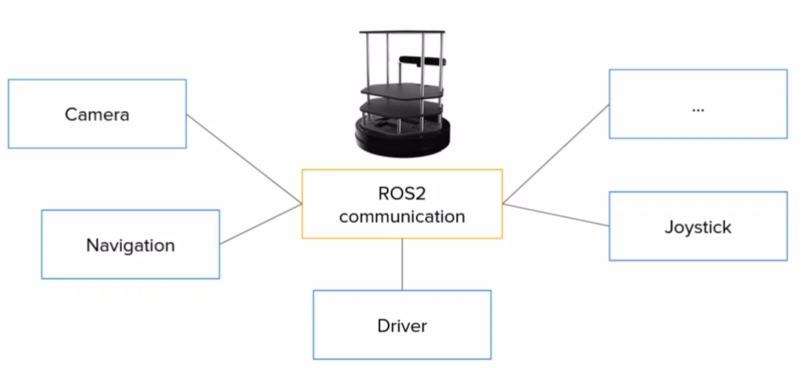
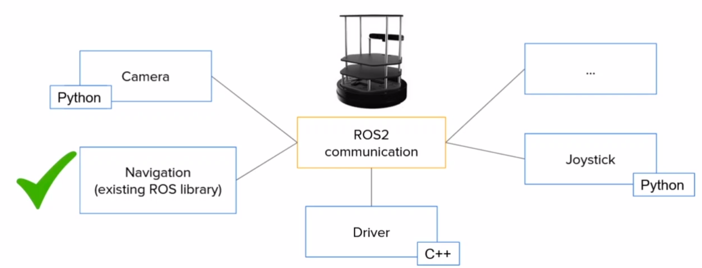
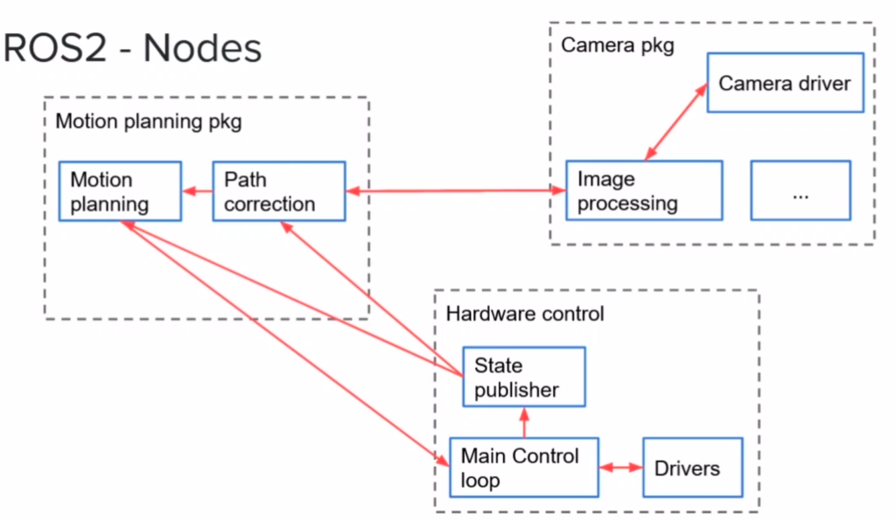
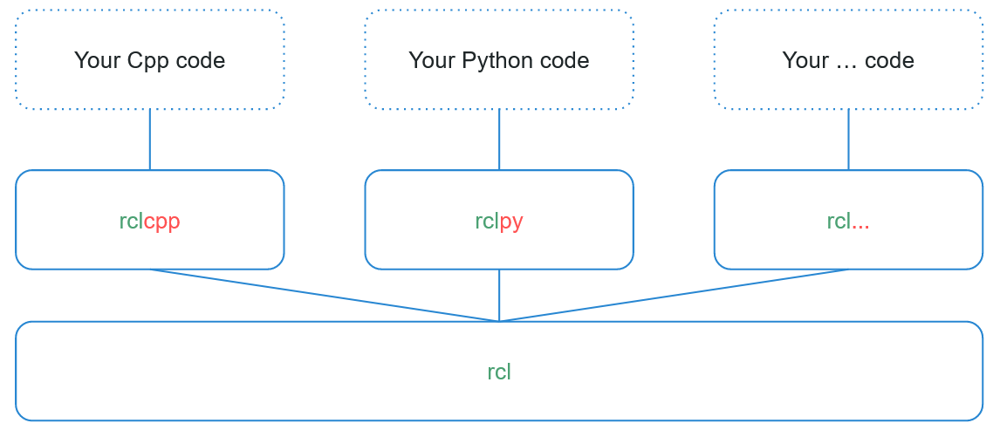
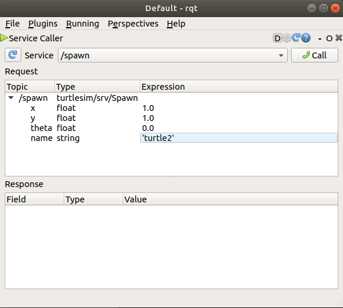
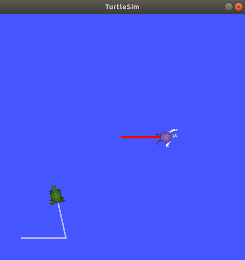

~/ros2_ws and a Python package, then build it with colcon.ros2 node and rqt_graph.~/ros2_ws holds everythingmy_py_pkg groups related nodessetup.pycolcon build then sourceros2 run my_py_pkg py_node| Time | Activity | Type |
|---|---|---|
| 0:00–0:10 | Warm-up questions on Lecture 1 & Mission Zero | Check |
| 0:10–0:30 | The idea: node / package / workspace (kitchen analogy + diagram) | Teach |
| 0:30–0:55 | Lab 1 — workspace + package (everyone builds together, step by step) | Do |
| 0:55–1:40 | Lab 2 — first node, then the OOP node with a timer | Do |
| 1:40–1:50 | Break | |
| 1:50–2:15 | Lab 3 — ros2 node, renaming, rqt_graph | Do |
| 2:15–2:40 | Lab 4 — turtlesim tour, spawn and drive a second turtle | Do |
| 2:40–3:00 | Activity 2.1 in pairs, exit ticket, homework | Check |
Teaching tips. Type every command live on the projector and let students copy it; do not move on until most students have ticked the step. The most common problem today is forgetting to source, so say "build, then source" out loud every time. Ask fast finishers to help a neighbour before starting the activities.
Answer in your head (or with a neighbour) first, then open the answer.
What does source /opt/ros/humble/setup.bash do?
ros2 work. Every new terminal needs it, which is why we put it in ~/.bashrc.Which command starts the turtlesim window?
ros2 run turtlesim turtlesim_node. The pattern is ros2 run <package> <executable>.What does chmod +x file.py do?
Think of a restaurant kitchen. Each chef does one job: one cuts vegetables, one grills, one makes sauce. They pass food to each other. The chefs work at stations, and all stations sit inside one kitchen.
In ROS 2: a chef = node, a station = package, and the kitchen = workspace.
A robot program is not one giant file. It is split into small programs called nodes. On a mobile robot you might have a camera node, a LiDAR node, a motor-driver node and a navigation node. Each does one thing, and they talk to each other.
colcon build turns your src/ into something ROS 2 can run.


~/ros2_ws) that holds your packages in src/.src/.ros2 run pkg, defined in setup.py.You write Python and call the rclpy library. Under the hood, rclpy (Python) and rclcpp (C++) both use the same C library, rcl, which talks to DDS, the middleware that actually moves data between nodes. That is why a Python node and a C++ node can talk to each other.

Goal: have ~/ros2_ws with one Python package inside it, built with colcon and loaded in every terminal.
colcon was installed in Lecture 1. This line makes Tab complete colcon commands in every terminal.
echo 'source /usr/share/colcon_argcomplete/hook/colcon-argcomplete.bash' >> ~/.bashrc
source ~/.bashrcmkdir -p ~/ros2_ws/src
cd ~/ros2_ws
colcon build
lsSummary: 0 packages finished [0.2s] build install log src
colcon created three new folders. You only ever edit src/. The other three are made by the build, and it is safe to delete them.
echo 'source ~/ros2_ws/install/setup.bash' >> ~/.bashrc
source ~/.bashrc
tail -n 4 ~/.bashrcsource /opt/ros/humble/setup.bash if [ -f ~/limo_ws/install/setup.bash ]; then source ~/limo_ws/install/setup.bash; fi source /usr/share/colcon_argcomplete/hook/colcon-argcomplete.bash source ~/ros2_ws/install/setup.bash
Packages are always created inside src/.
cd ~/ros2_ws/src
ros2 pkg create my_py_pkg --build-type ament_python --dependencies rclpyThis is what you get. Learn the three files marked ⭐, because you will edit them all the time:
Always build from the workspace root (~/ros2_ws), never from inside src/.
cd ~/ros2_ws
colcon build --packages-select my_py_pkgStarting >>> my_py_pkg Finished <<< my_py_pkg [1.1s] Summary: 1 package finished
That is harmless on Humble, and your package still built. If you want to silence it: pip3 install setuptools==58.2.0.
Goal: run ros2 run my_py_pkg py_node and see your own message printed every half second.
cd ~/ros2_ws/src/my_py_pkg/my_py_pkg
touch my_first_node.py
chmod +x my_first_node.py
code ~/ros2_wsThe last line opens the whole workspace in VS Code.
#!/usr/bin/env python3
import rclpy
from rclpy.node import Node
def main(args=None):
rclpy.init(args=args) # 1. start ROS 2 communication
node = Node("py_test") # 2. create a node called py_test
node.get_logger().info("Hello ROS2") # 3. print a log message
rclpy.spin(node) # 4. keep the node alive until Ctrl+C
rclpy.shutdown() # 5. clean up
if __name__ == "__main__":
main()Every ROS 2 Python program follows these five steps: init → create node → do work → spin → shutdown.
setup.pyROS 2 only runs files that you have listed here. Add the highlighted line inside console_scripts:
entry_points={
'console_scripts': [
"py_node = my_py_pkg.my_first_node:main",
],
},Read it as: "the command py_node runs the main function in my_py_pkg/my_first_node.py".
cd ~/ros2_ws
colcon build --packages-select my_py_pkg --symlink-install
source ~/.bashrc
ros2 run my_py_pkg py_node[INFO] [1727700000.123456789] [py_test]: Hello ROS2
The program keeps running because of spin. Press Ctrl+C to stop it.
my_first_node.py — the file namepy_test — the node name (what ros2 node list shows)py_node — the executable name (what you type after ros2 run)--symlink-install?It links to your Python file instead of copying it. After this, editing the Python file needs no rebuild. You still rebuild when you add a new executable in setup.py.
Real nodes are written as a class. Replace the whole file with this:
#!/usr/bin/env python3
import rclpy
from rclpy.node import Node
class MyNode(Node):
def __init__(self):
super().__init__("py_test")
self.counter_ = 0
self.get_logger().info("Hello ROS2")
self.create_timer(0.5, self.timer_callback) # call every 0.5 s
def timer_callback(self):
self.counter_ += 1
self.get_logger().info("Hello " + str(self.counter_))
def main(args=None):
rclpy.init(args=args)
node = MyNode()
rclpy.spin(node)
rclpy.shutdown()
if __name__ == "__main__":
main()ros2 run my_py_pkg py_node[INFO] [...] [py_test]: Hello ROS2 [INFO] [...] [py_test]: Hello 1 [INFO] [...] [py_test]: Hello 2 [INFO] [...] [py_test]: Hello 3
| Code | Meaning |
|---|---|
| class MyNode(Node) | Your node is a ROS 2 Node, so it gets all of Node's abilities (logger, timers, publishers…). |
| super().__init__("py_test") | Gives the node its name. |
| self.counter_ = 0 | A variable that belongs to the node. It remembers its value between callbacks. |
| create_timer(0.5, f) | "Call function f every 0.5 seconds." A timer is how a node does something repeatedly. |
| timer_callback | A callback is a function that ROS 2 calls for you when something happens (here: the timer fires). |
| rclpy.spin(node) | Waits and runs callbacks. Without spin, the timer would never fire. |
From now on, every node starts from this template. Save it as ~/ros2_ws/node_template.py so you can copy it.
#!/usr/bin/env python3
import rclpy
from rclpy.node import Node
class MyCustomNode(Node): # MODIFY NAME
def __init__(self):
super().__init__("node_name") # MODIFY NAME
def main(args=None):
rclpy.init(args=args)
node = MyCustomNode() # MODIFY NAME
rclpy.spin(node)
rclpy.shutdown()
if __name__ == "__main__":
main()#!/usr/bin/env python3
import rclpy
from rclpy.node import Node
class MyNode(Node):
def __init__(self):
super().__init__("py_test")
self.counter_ = 0
self.get_logger().info("Hello ROS2")
self.create_timer(0.5, self.timer_callback)
def timer_callback(self):
self.counter_ += 1
self.get_logger().info("Hello " + str(self.counter_))
def main(args=None):
rclpy.init(args=args)
node = MyNode()
rclpy.spin(node)
rclpy.shutdown()
if __name__ == "__main__":
main()mkdir -p ~/ros2_ws/srcros2 pkg create my_py_pkg --build-type ament_python --dependencies rclpy (inside src/)my_first_node.py in the inner my_py_pkg/ folder"py_node = my_py_pkg.my_first_node:main" to setup.pycolcon build --packages-select my_py_pkg --symlink-install (from ~/ros2_ws)source ~/.bashrcros2 run my_py_pkg py_nodePython is our main language, but ROS 2 is multi-language. If you know C++, try this.
cd ~/ros2_ws/src
ros2 pkg create my_cpp_pkg --build-type ament_cmake --dependencies rclcpp
touch my_cpp_pkg/src/my_first_node.cpp#include "rclcpp/rclcpp.hpp"
class MyNode : public rclcpp::Node
{
public:
MyNode() : Node("cpp_test"), counter_(0)
{
RCLCPP_INFO(this->get_logger(), "Hello Cpp Node");
timer_ = this->create_wall_timer(std::chrono::seconds(1),
std::bind(&MyNode::timerCallback, this));
}
private:
void timerCallback()
{
counter_++;
RCLCPP_INFO(this->get_logger(), "Hello %d", counter_);
}
rclcpp::TimerBase::SharedPtr timer_;
int counter_;
};
int main(int argc, char **argv)
{
rclcpp::init(argc, argv);
auto node = std::make_shared<MyNode>();
rclcpp::spin(node);
rclcpp::shutdown();
return 0;
}Add these lines to my_cpp_pkg/CMakeLists.txt, just before ament_package():
add_executable(cpp_node src/my_first_node.cpp)
ament_target_dependencies(cpp_node rclcpp)
install(TARGETS
cpp_node
DESTINATION lib/${PROJECT_NAME}
)cd ~/ros2_ws
colcon build --packages-select my_cpp_pkg
source ~/.bashrc
ros2 run my_cpp_pkg cpp_nodeIn C++, every code change needs a rebuild. For VS Code IntelliSense, add /opt/ros/humble/include/** to the include path (Ctrl+Shift+P, then "C/C++: Edit Configurations").
Goal: use the command line to see which nodes are running, and start the same program several times under different names.
ros2 run my_py_pkg py_noderos2 node list
ros2 node info /py_test/py_test
/py_test
Subscribers:
Publishers:
/parameter_events: rcl_interfaces/msg/ParameterEvent
/rosout: rcl_interfaces/msg/Log
Service Servers:
...ROS 2 adds some publishers and services to every node automatically. Your own ones will appear here in the next lectures.
Stop Terminal 1 first. Then open three terminals (Terminator: Ctrl+Shift+E / O splits the window).
ros2 run my_py_pkg py_node --ros-args --remap __node:=abcros2 run my_py_pkg py_node --ros-args --remap __node:=xyzros2 node list/abc /xyz
ROS 2 lets you start them, but prints a warning and the tools get confused. Every node in a system should have a unique name. Renaming at runtime is how you run one program several times.
rqt_graphKeep /abc and /xyz running.
rqt_graphA window opens and shows your nodes. They are not connected yet, because they don't talk to each other. You will see arrows between nodes from Lecture 3 onwards. Close the window and stop all nodes with Ctrl+C.
Goal: drive a turtle, see its node graph, spawn a second turtle and drive both.
ros2 run turtlesim turtlesim_noderos2 run turtlesim turtle_teleop_keyClick on Terminal 2 and use the arrow keys. The keyboard only works while that terminal is selected.
ros2 node list
rqt_graph/teleop_turtle /turtlesim
In rqt_graph you'll see /teleop_turtle → /turtle1/cmd_vel → /turtlesim. That arrow in the middle is a topic, which is the whole subject of Lecture 3.
rqt/spawn.x = 2.0, y = 2.0, theta = 0.0, name = 'turtle2' (keep the quotes).The teleop program always publishes on turtle1/cmd_vel. With --remap we point it to turtle2/cmd_vel instead, without changing any code.
ros2 run turtlesim turtle_teleop_key --ros-args --remap turtle1/cmd_vel:=turtle2/cmd_velNow Terminal 2 drives turtle1 and Terminal 4 drives turtle2. Refresh rqt_graph and find both teleop nodes.


In my_py_pkg, create student_node.py starting from the template. The node must be named student and, every 1 second, print "Hi, I am <your name>, message <n>". Register it as the executable hello_me. Then run it twice at the same time, with the node names student_a and student_b.
setup.py, then a rebuild because it's a new executable. Use --ros-args --remap __node:=student_a.#!/usr/bin/env python3
import rclpy
from rclpy.node import Node
class StudentNode(Node):
def __init__(self):
super().__init__("student")
self.count_ = 0
self.create_timer(1.0, self.say_hi)
def say_hi(self):
self.count_ += 1
self.get_logger().info(f"Hi, I am Ali, message {self.count_}")
def main(args=None):
rclpy.init(args=args)
node = StudentNode()
rclpy.spin(node)
rclpy.shutdown()
if __name__ == "__main__":
main()# setup.py -> add: "hello_me = my_py_pkg.student_node:main",
cd ~/ros2_ws && colcon build --packages-select my_py_pkg --symlink-install && source ~/.bashrc
ros2 run my_py_pkg hello_me --ros-args --remap __node:=student_a
ros2 run my_py_pkg hello_me --ros-args --remap __node:=student_b # second terminalChange student_node.py so that it prints twice per second and stops the timer after message 10, then logs "Done!".
self.timer_ = self.create_timer(0.5, ...), then call self.timer_.cancel(). self.timer_ = self.create_timer(0.5, self.say_hi)
def say_hi(self):
self.count_ += 1
self.get_logger().info(f"Hi, I am Ali, message {self.count_}")
if self.count_ >= 10:
self.timer_.cancel()
self.get_logger().info("Done!")Which folder do you edit by hand?
src/. The other three are generated by colcon build and can be deleted safely.You added a new executable to setup.py. What must you do before ros2 run finds it?
--symlink-install only saves rebuilds when you edit Python files. New executables need a build and a source.What does rclpy.spin(node) do?
Which name appears in ros2 node list for super().__init__("py_test")?
super().__init__(). py_node is the executable and MyNode is only the class.How do you run the same executable twice without a name clash?
| You see… | Why | Fix |
|---|---|---|
| Package 'my_py_pkg' not found | The terminal has not loaded your workspace yet. | source ~/.bashrc (or open a new terminal) after building. |
| No executable found | The executable is not in setup.py, or you didn't rebuild after adding it. | Check the console_scripts line, then colcon build and source. |
| ModuleNotFoundError: my_py_pkg.my_first_node | The .py file is in the wrong folder. | It must be in ~/ros2_ws/src/my_py_pkg/my_py_pkg/ (the inner folder). |
| build/ install/ log/ inside src/ | You ran colcon build from inside src/. | Delete those three folders in src/, then always build from ~/ros2_ws. |
| IndentationError | Python needs consistent spaces. | Use 4 spaces. In VS Code, "Convert Indentation to Spaces". |
| Teleop keys do nothing | The wrong window is selected. | Click inside the teleop terminal, not the turtle window. |
Which folder do you edit: src, build, install or log?
src. The others are generated by colcon build.In "py_node = my_py_pkg.my_first_node:main", which part do you type after ros2 run my_py_pkg?
py_node, the executable name.What happens if you remove rclpy.spin(node) from the OOP node?
You edited a Python file and built with --symlink-install. Do you need to rebuild?
setup.py.Write the command that runs py_node with the node name robot1.
ros2 run my_py_pkg py_node --ros-args --remap __node:=robot1ros2 pkg create NAME --build-type ament_python --dependencies rclpynew Python package (inside src/)colcon build --packages-select PKG --symlink-installbuild one package (from ~/ros2_ws)source ~/.bashrcreload after every buildros2 run PKG EXECUTABLErun a noderos2 node list · ros2 node info /NAMEsee running nodes--ros-args --remap __node:=NEWrename a node at runtimerqt_graph · rqtgraphical debugging toolsros2 run turtlesim turtlesim_nodethe turtle simulator